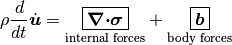
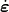
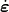
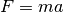
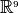
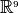
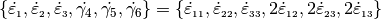
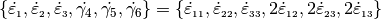
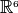
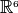

1.4. Solution Method¶
Matmodlab exercises a material model directly by “driving” it through user specified paths. Matmodlab computes an increment in deformation for a given step and requires that the material model update the stress in the material to the end of that step. Because of the similarity of the material model interface in Matmodlab with many commercial finite element codes, transitioning material models developed and tested in Matmodlab to full finite element codes should be an easy process.
This guide has several purposes:
- Describe the role and importance of the material model in a finite element procedure
- Describe the solution method adopted by drivers in Matmodlab (comparing to finite elements where applicable)
- Describe how to set up, run, and view results of a Matmodlab simulation.
- Introduce material Validation and Verification testing procedures.
The Role of the Material Model in Continuum Mechanics¶
Conservation Laws¶
Conservation of mass, momentum, and energy are the central tenets of the analysis of the response of a continuous media to deformation and/or load. Each conservation law can be summarized by the statement that the time rate of change of a quantity in a continuous body is equal to the rate of production in the interior plus flux through the boundary
Mathematically, the conservation laws for a point in the continuum are
Conservation of mass

Conservtion of momentum per unit volume

Conservation of energy per unit volume

where  is the displacement,
is the displacement,  the mass
density,
the mass
density,  the stress,  the rate of strain,
the stress,  the rate of strain,
 the body force per unit volume,
the body force per unit volume,  the heat
flux,
the heat
flux,  the heat source, and
the heat source, and  is the internal energy
per unit mass.
is the internal energy
per unit mass.
In solid mechanics, mass is conserved trivially, and many problems are adiabatic or isotrhermal, so that only the momentum balance is explicitly solved
(1)
The balance of linear momentum is the continuum mechanics generalization of Newton’s second law .
The first term on the RHS of (1) represents the internal forces, which arise in the medium to resist imposed deformation. This resistance is a fundamental response of matter and is given by the divergence of the stress field.
The balance of linear momentum represents an initial boundary value problem for applications of interest in solid dynamics:
(2)
The Finite Element Method¶
The form of the momentum equation in (2) is termed the strong form.
The strong form of the initial BVP problem can also be expressed in the weak
form by introducing a test function  and integrating
over space
and integrating
over space
(3)
Integrating (3) by parts allows the traction boundary conditions to be incorporated in to the governing equations
(4)
This form of the IBVP is called the weak form. The weak form poses the IBVP as a integro-differential equation and eliminates singularities that may arise in the strong form. Traction boundary conditions are incorporated in the governing equations. The weak form forms the basis for finite element methods.
In the finite element method, forms of are assumed in
subdomains (elements) in  and displacements are sought such that
the force imbalance
and displacements are sought such that
the force imbalance  is minimized:
is minimized:
(5)
The equations of motion as described in (5) are not closed, but
require relationships relating to
Constitutive model  relationship between
and
relationship between
and
In the typical finite element procedure, the host finite element code passes to the constitutive routine the stress and material state at the beginning of a finite step (in time) and kinematic quantities at the end of the step. The constitutive routine is responsible for updating the stress to the end of the step. At the completion of the step, the host code then uses the updated stress to compute kinematic quantities at the end of the next step. This process is continued until the simulation is completed. The host finite element handles the allocation and management of all memory, including memory required for material variables.
Solution Procedure¶
In addition to providing a platform for material model developers to formulate and test constitutive routines, Matmodlab aims to provide users of material models an independent platform to exercise, parameterize, and compare material responses against single element finite element simulations. To this end, the solution procedure in Matmodlab is similar to that of the finite element method, in that the host code (Matmodlab) provides to the constitutive routine a measure of deformation at the end of a finite step and expects the updated stress in return. However, rather than solve the momentum equation at the beginning of each step and advancing kinematic quantities to the step’s end, Matmodlab retrieves updated kinematic quantities from user defined tables and/or functions.
The path through which a material is exercised is defined by piecewise continuous “steps” in which tensor components of stress and/or deformation are specified at discrete points in time. The components are used to obtain a sequence of piecewise constant strain rates that are used to advance the kinematic state. Supported components are strain, strain rate, stress, stress rate, deformation gradient, displacement, and velocity. “Mixed-modes” of strain and stress (and their rates) are supported. Components of displacement and velocity control are applied only to the “+” faces of a unit cube centered at the coordinate origin.
The Strain Tensor¶
The components of strain are defined by

where  is the right Cauchy stretch tensor, defined by the
polar decomposition of the deformation gradient
is the right Cauchy stretch tensor, defined by the
polar decomposition of the deformation gradient  , and
, and  is a user specified
“Seth-Hill” parameter that controls the strain definition. Choosing
is a user specified
“Seth-Hill” parameter that controls the strain definition. Choosing
 gives the Lagrange strain, which might be useful when testing
models cast in a reference coordinate system. The choice
gives the Lagrange strain, which might be useful when testing
models cast in a reference coordinate system. The choice  ,
which gives the engineering strain, is convenient when driving a problem over
the same strain path as was used in an experiment. The choice
,
which gives the engineering strain, is convenient when driving a problem over
the same strain path as was used in an experiment. The choice  corresponds to the logarithmic (Hencky) strain. Common values of
and the associated names for each (there is some ambiguity in
the names) are listed in Table 1
corresponds to the logarithmic (Hencky) strain. Common values of
and the associated names for each (there is some ambiguity in
the names) are listed in Table 1
|
Name(s) |
|---|---|
| -2 | Green |
| -1 | True, Cauchy |
| 0 | Logarithmic, Hencky, True |
| 1 | Engineering, Swainger |
| 2 | Lagrange, Almansi |
The volumetric strain ![\Strain[v]](_images/math/b2d0a2771b25cdc21b9c57572af64fcb85071526.png) is defined
is defined
(6)![\Strain[v] =
\begin{cases}
\OneOver{\kappa}\left(\Jacobian^{\kappa} - 1\right)
& \text{if }\kappa \ne 0 \\
\ln{\Jacobian} & \text{if }\kappa = 0
\end{cases}](_images/math/52985f81907340241ddfac5c541b221107b46e4b.png)
where the Jacobian  is the determinant of the deformation gradient.
is the determinant of the deformation gradient.
Each step component, from time  to
to  is
subdivided into a user-specified number of “frames” and the material model
evaluated at each frame. When volumetric strain, deformation gradient,
displacement, or velocity are specified for a step, Matmodlab internally
determines the corresponding strain components. If a component of stress is
specified, Matmodlab determines the strain increment that minimizes the
distance between the prescribed stress component and model response.
is
subdivided into a user-specified number of “frames” and the material model
evaluated at each frame. When volumetric strain, deformation gradient,
displacement, or velocity are specified for a step, Matmodlab internally
determines the corresponding strain components. If a component of stress is
specified, Matmodlab determines the strain increment that minimizes the
distance between the prescribed stress component and model response.
Stress Control¶
Stress control is accomplished through an iterative scheme that seeks to
determine the unkown strain rates, ![\dStrain\,[\text{v}]](_images/math/438c81c94a17ad44e98fa010258d3692d00d87a2.png) , that satisfy
, that satisfy
![\Stress\left(\dStrain\,[\text{v}]\right) = \PrescStress](_images/math/3d13067136df7a1a695aa1de7f21548786ceb156.png)
where,  is a vector subscript array containing the components
for which stresses are prescribed, and
is a vector subscript array containing the components
for which stresses are prescribed, and  are the components
of prescribed stress.
are the components
of prescribed stress.
The approach is an iterative scheme employing a multidimensional Newton’s method. Each iteration begins by determining the submatrix of the material stiffness
![\Stiffness_{\text{v}} = \Stiffness\,[\text{v}, \text{v}]](_images/math/7a09b58c6a6c2280c6a49bdba0d2b841725cfb3f.png)
where  is the full stiffness matrix
is the full stiffness matrix
 . The value of
is then updated according to
. The value of
is then updated according to
![\dStrain_{n+1}\,[\text{v}] =
\dStrain_{n}\,[\text{v}] -
\Stiffness_{\text{v}}^{-1}\DDotProd\Stress^{*}(\dStrain_{n}\,[\text{v}])/dt](_images/math/5030208270553873402f35dcdf3df666e80a745c.png)
where
![\Stress^{*}(\dStrain\,[\text{v}]) = \Stress(\dStrain\,[\text{v}])
- \PrescStress](_images/math/a6b9741fb988c65822ab08e765674f70d172e5f2.png)
The Newton procedure will converge for valid stress states. However, it is possible to prescribe invalid stress state, e.g. a stress state beyond the material’s elastic limit. In these cases, the Newton procedure may not converge to within the acceptable tolerance and a Nelder-Mead simplex method is used as a back up procedure. A warning is logged in these cases.
The Material Stiffness¶
As seen in Stress Control, the material tangent stiffness matrix, commonly referred
to as the material’s “Jacobian”, plays an integral roll in the solution of the
inverse stress problem (determining strains as a function of prescribed
stress). Similarly, the Jacobian plays a role in implicit finite element
methods. In general, the Jacobian is a fourth order tensor in  with 81 independent components. Casting the stress and strain second order
tensors in as first order tensors in  and the
Jacobian as a second order tensor in , the stress/strain relation
in Stress Control can be written in matrix form as
with 81 independent components. Casting the stress and strain second order
tensors in as first order tensors in  and the
Jacobian as a second order tensor in , the stress/strain relation
in Stress Control can be written in matrix form as
![\begin{Bmatrix}
\dStress[11] \\
\dStress[22] \\
\dStress[33] \\
\dStress[12] \\
\dStress[23] \\
\dStress[13] \\
\dStress[21] \\
\dStress[32] \\
\dStress[31]
\end{Bmatrix} =
\begin{bmatrix}
C_{1111} & C_{1122} & C_{1133} & C_{1112} & C_{1123} & C_{1113} & C_{1121} & C_{1132} & C_{1131} \\
C_{2211} & C_{2222} & C_{2233} & C_{2212} & C_{2223} & C_{2213} & C_{2221} & C_{2232} & C_{2231} \\
C_{3311} & C_{3322} & C_{3333} & C_{3312} & C_{3323} & C_{3313} & C_{3321} & C_{3332} & C_{3331} \\
C_{1211} & C_{1222} & C_{1233} & C_{1212} & C_{1223} & C_{1213} & C_{1221} & C_{1232} & C_{1231} \\
C_{2311} & C_{2322} & C_{2333} & C_{2312} & C_{2323} & C_{2313} & C_{2321} & C_{2332} & C_{2331} \\
C_{1311} & C_{1322} & C_{1333} & C_{1312} & C_{1323} & C_{1313} & C_{1321} & C_{1332} & C_{1331} \\
C_{2111} & C_{2122} & C_{2133} & C_{2212} & C_{2123} & C_{2213} & C_{2121} & C_{2132} & C_{2131} \\
C_{3211} & C_{3222} & C_{3233} & C_{3212} & C_{3223} & C_{3213} & C_{3221} & C_{3232} & C_{3231} \\
C_{3111} & C_{3122} & C_{3133} & C_{3312} & C_{3123} & C_{3113} & C_{3121} & C_{3132} & C_{3131}
\end{bmatrix}
\begin{Bmatrix}
\dStrain[11] \\
\dStrain[22] \\
\dStrain[33] \\
\dStrain[12] \\
\dStrain[23] \\
\dStrain[13] \\
\dStrain[21] \\
\Strain[32] \\
\dStrain[31]
\end{Bmatrix}](_images/math/897311096d905e0454ad427e34027ed6aad00f37.png)
Due to the symmetries of the stiffness and strain tensors (![\Stiffness[ijkl]=\Stiffness[ijlk]](_images/math/8ad8dab2be42da5c6b6d722ee9ab48434a6fb4e5.png) ,
, ![\dStrain[ij]=\dStrain[ji]](_images/math/58c2d369a69c56a4e6811bb8b8865d029f4f5c14.png) ), the expression above can be simplified by removing the last three columns of :
), the expression above can be simplified by removing the last three columns of :
![\begin{Bmatrix}
\dStress[11] \\
\dStress[22] \\
\dStress[33] \\
\dStress[12] \\
\dStress[23] \\
\dStress[13] \\
\dStress[21] \\
\dStress[32] \\
\dStress[31]
\end{Bmatrix} =
\begin{bmatrix}
C_{1111} & C_{1122} & C_{1133} & C_{1112} & C_{1123} & C_{1113} \\
C_{2211} & C_{2222} & C_{2233} & C_{2212} & C_{2223} & C_{2213} \\
C_{3311} & C_{3322} & C_{3333} & C_{3312} & C_{3323} & C_{3313} \\
C_{1211} & C_{1222} & C_{1233} & C_{1212} & C_{1223} & C_{1213} \\
C_{2311} & C_{2322} & C_{2333} & C_{2312} & C_{2323} & C_{2313} \\
C_{1311} & C_{1322} & C_{1333} & C_{1312} & C_{1323} & C_{1313} \\
C_{2111} & C_{2122} & C_{2133} & C_{2212} & C_{2123} & C_{2213} \\
C_{3211} & C_{3222} & C_{3233} & C_{3212} & C_{3223} & C_{3213} \\
C_{3111} & C_{3122} & C_{3133} & C_{3112} & C_{3123} & C_{3113}
\end{bmatrix}
\begin{Bmatrix}
\dStrain[11] \\
\dStrain[22] \\
\dStrain[33] \\
2\dStrain[12] \\
2\dStrain[23] \\
2\dStrain[13]
\end{Bmatrix}](_images/math/ae5b7b30d8b071df661330f8e235d06567ce3322.png)
Considering the symmetry of the stress tensor (![\dStress[ij]=\dStress[ji]](_images/math/68b63e51cc8f068f6f8a11c18c7240ddeedd1b74.png) ) and the major symmetry of (
) and the major symmetry of (![\Stiffness[ijkl]=\Stiffness[klij]](_images/math/9ba708a999a34abc7f6d3dc3cd34263d6a42408b.png) ), the final three rows of may also be ommitted, resulting in the symmetric form
), the final three rows of may also be ommitted, resulting in the symmetric form
![\begin{Bmatrix}
\dStress[11] \\
\dStress[22] \\
\dStress[33] \\
\dStress[12] \\
\dStress[23] \\
\dStress[13]
\end{Bmatrix} =
\begin{bmatrix}
C_{1111} & C_{1122} & C_{1133} & C_{1112} & C_{1123} & C_{1113} \\
& C_{2222} & C_{2233} & C_{2212} & C_{2223} & C_{2213} \\
& & C_{3333} & C_{3312} & C_{3323} & C_{3313} \\
& & & C_{1212} & C_{1223} & C_{1213} \\
& & & & C_{2323} & C_{2313} \\
symm & & & & & C_{1313} \\
\end{bmatrix}
\begin{Bmatrix}
\dStrain[11] \\
\dStrain[22] \\
\dStrain[33] \\
2\dStrain[12] \\
2\dStrain[23] \\
2\dStrain[13]
\end{Bmatrix}](_images/math/0d7003ebea8efe06efb5df19fb94935d53bebf3a.png)
Letting ![\{\dStress[1],\dStress[2],\dStress[3], \dStress[4], \dStress[5], \dStress[6]\}= \{\dStress[11],\dStress[22],\dStress[33], \dStress[12],\dStress[23],\dStress[13]\}](_images/math/a438110f0ff3779bf1ac64bbfea353af8e5720bb.png) and , the above stress-strain relationship is re-written as
and , the above stress-strain relationship is re-written as
![\begin{Bmatrix}
\dStress[1] \\
\dStress[2] \\
\dStress[3] \\
\dStress[4] \\
\dStress[5] \\
\dStress[6]
\end{Bmatrix} =
\begin{bmatrix}
C_{11} & C_{12} & C_{13} & C_{14} & C_{15} & C_{16} \\
& C_{22} & C_{23} & C_{24} & C_{25} & C_{26} \\
& & C_{33} & C_{34} & C_{35} & C_{36} \\
& & & C_{44} & C_{45} & C_{46} \\
& & & & C_{55} & C_{56} \\
symm & & & & & C_{66} \\
\end{bmatrix}
\begin{Bmatrix}
\dStrain[1] \\
\dStrain[2] \\
\dStrain[3] \\
\dot{\gamma_4} \\
\dot{\gamma_5} \\
\dot{\gamma_6}
\end{Bmatrix}](_images/math/910fd049caaed6a5e824c1d28a62cb8303d03bfd.png)
As expressed, the components of and  are first order tensors and is a second order tensor in , respectively.
are first order tensors and is a second order tensor in , respectively.
Alternative Representations of Tensors in ¶
The representation of symmetric tensors at the end of The Material
Stiffness is known as the “Voight” representation. The shear strain
components ![\dStrain[I]=2\dStrain[ij], \ I=4,5,6, \ ij=12,23,13](_images/math/c9a23d3902bc261a07915d22981d224eff28d36b.png) are
known as the engineering shear strains (in contrast to
are
known as the engineering shear strains (in contrast to ![\dStrain[ij], \
ij=12,23,13](_images/math/ea529137f0dc803e39c01b3907a88d6762aa9834.png) which are known as the tensor components). An advantage of the
Voight representation is that the scalar product
which are known as the tensor components). An advantage of the
Voight representation is that the scalar product
![\Stress[ij]\dStrain[ij]=\Stress[I]\dStrain[I]](_images/math/79760fb43bcaab4accfb37dee622923c3ac52194.png) is preserved and the
components of the stiffness tensor are unchanged in . However,
one must take care to account for the factor of 2 in the engineering shear
strain components.
is preserved and the
components of the stiffness tensor are unchanged in . However,
one must take care to account for the factor of 2 in the engineering shear
strain components.
Alternatively, one can express symmetric second order tensors with their
“Mandel” components
![\{\AA[1],\AA[2],\AA[3],\AA[4],\AA[5],\AA[6]\}=\{\AA[11],\AA[22],\AA[33],
\sqrt{2}\AA[12],\sqrt{2}\AA[23],\sqrt{2}\AA[13]\}](_images/math/105a1a244d6c0272d0da6766dd7f9524da042c50.png) . Representing both the stress and strain with their Mandel representation also preserves the scalar product, without having to treat the components of stress and strain differently (at the expense of carrying around the factor of
. Representing both the stress and strain with their Mandel representation also preserves the scalar product, without having to treat the components of stress and strain differently (at the expense of carrying around the factor of  in the off-diagonal components of both). The Mandel representation has the advantage that its basis in is orthonormal, whereas the basis for the Voight representation is only orthogonal. If Mandel components are used, the components of the stiffness must be modified as
in the off-diagonal components of both). The Mandel representation has the advantage that its basis in is orthonormal, whereas the basis for the Voight representation is only orthogonal. If Mandel components are used, the components of the stiffness must be modified as